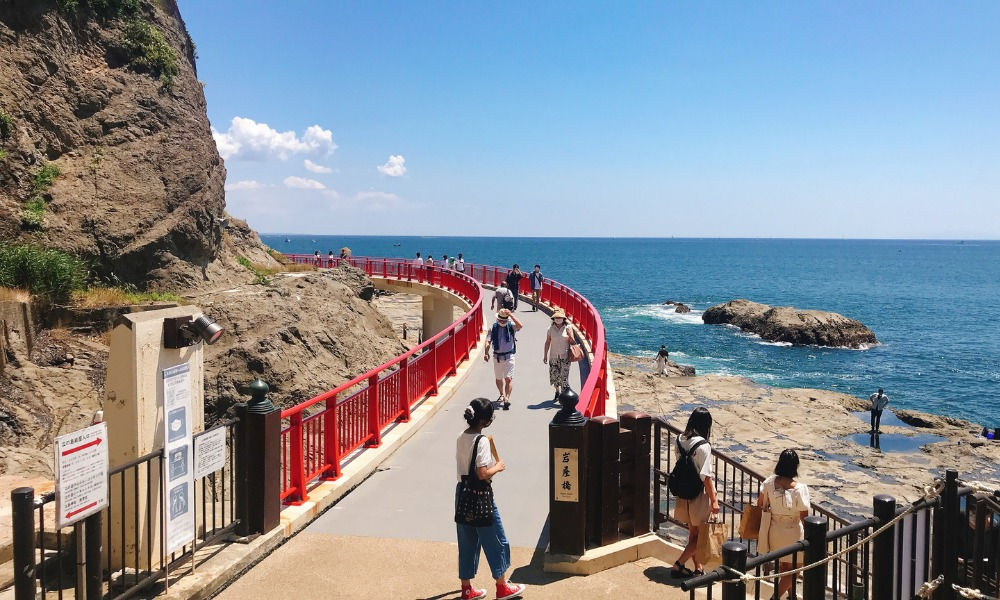
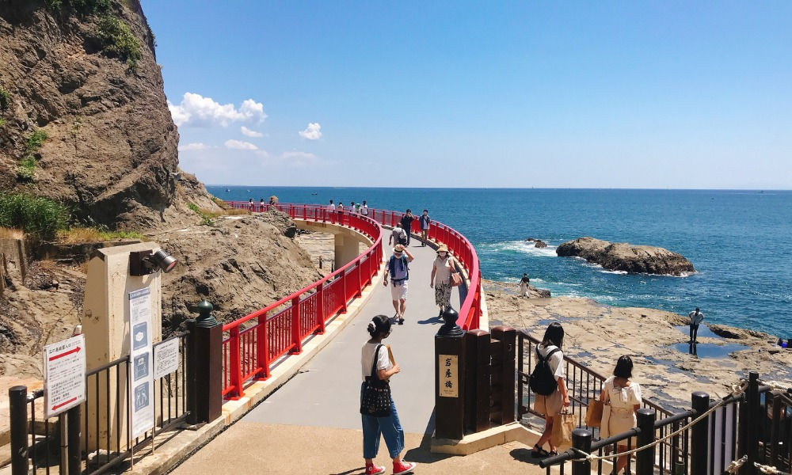

Enoshima
Enoshima Island is a quaint offshore destination with beautiful temples, caves, and stunning coastal views. Just an hour from Tokyo by train, it is perfect for summer (June–August) beach days or spring visits when flowers bloom.
Enoshima Island is a quaint offshore destination with beautiful temples, caves, and stunning coastal views. Just an hour from Tokyo by train, it is perfect for summer (June–August) beach days or spring visits when flowers bloom.
